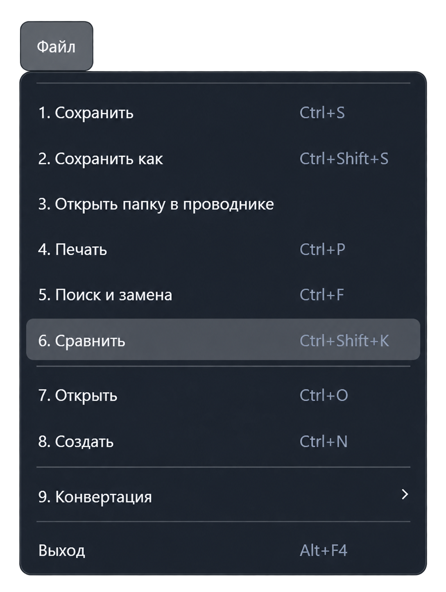

Функция «Сравнить»
Команда «Файл → Сравнить» сопоставляет содержимое уже открытых текстовых документов и показывает различия рядом. Исходный файл можно сравнить с одним или несколькими другими документами.
Сочетание клавиш: Ctrl + Shift + K.

Когда доступна команда
Должен быть активен текстовый редактор и открыто не менее двух текстовых документов. Если команда не отображается, откройте второй документ и вернитесь в редактор.
Порядок сравнения
- Откройте документы и вызовите команду «Сравнить».
- Выберите исходный файл.
- Отметьте один или несколько документов в списке «Файлы для сравнения».
- Нажмите «Запустить сравнение».
- Просмотрите результаты: для каждого выбранного файла создаётся отдельная вкладка сравнения.
Как читать результат
Слева отображается исходный текст, справа — сравниваемый. Приложение отмечает добавленные, удалённые и изменённые строки, а в изменённых строках — различия отдельных символов. Счётчики показывают количество файлов и изменений.
Сравнение учитывает регистр и пробельные символы. Оно использует содержимое открытых редакторов, включая изменения, ещё не сохранённые на диск.
Обновление списка и результатов
Кнопка «Обновить список» заново получает открытые документы. После изменения текста или состава файлов обновите список, проверьте выбор и запустите сравнение повторно.
Сравнение показывает различия, но не объединяет документы и не записывает изменения в исходные файлы.